- This is one of our first rought drafts of a linear prototype. Based on the UR we did on the sketches and drawings of the 3 versions.
Screenshots
- 1. Start
- 2 Your details
- 3. Email code
- 4. Who are you claiming for
- 5. Claiming food
- 6. Claiming food
- 7. Claiming food
- 8. Claiming food
- 9. Train journey
- 10. Tube/subway
- 11. Overnight stay
- 12. Did the court pay
- 13. Pay for an evening meal
- 14. How many nights
- 15. Did the court pay, no
- 16. Did you pay, Yes
- 17. How many nights
- 18. Why did you stay
- 19. Home postcode
- 20. Where was your accomodation
- 21. Paid work
- 22. Employed or self employed
- 23. Unpaid day off
- 24. Away for less than 4 hours
- 25. Away for more than 4 hours
- 26. Is your take home pay more than £67?
- 27. Daily take home page
- 28. Proof of employment
- 29. Employers details
- 30. Childcare
- 31. Pet sitting
- 32. Other expenses
- 33. Upload expenses
- 34. Choose how to be paid
- 35. Bank details
- 36. Check your details
- 37. Finished
1. Start

Using the standard start pattern. Telling users what they need to have before they start, in particular about the receipts they need.
We also considered whether we front-load the login page with a list of requirements for a user - e.g. evidence of receipts, details of the court dates - to ensure a user didn’t have to leave the journey as they didn’t know what they needed to complete it.
User Research
We found that users often had no idea about expenses when they started to fill in the current offline form.
They hadn’t receieved any guidance so the info here isn’t enough - they need to know what they can claim for, how much etc before they start the claim, ideally before they incur expenses.
2 Your details

We weren’t really testing this in detail as the onboarding process had not been figured out.
User Research
Users were happy to give us this information
3. Email code

We weren’t really testing this in detail as the onboarding process had not been figured out.
User Research
Users understood this
4. Who are you claiming for
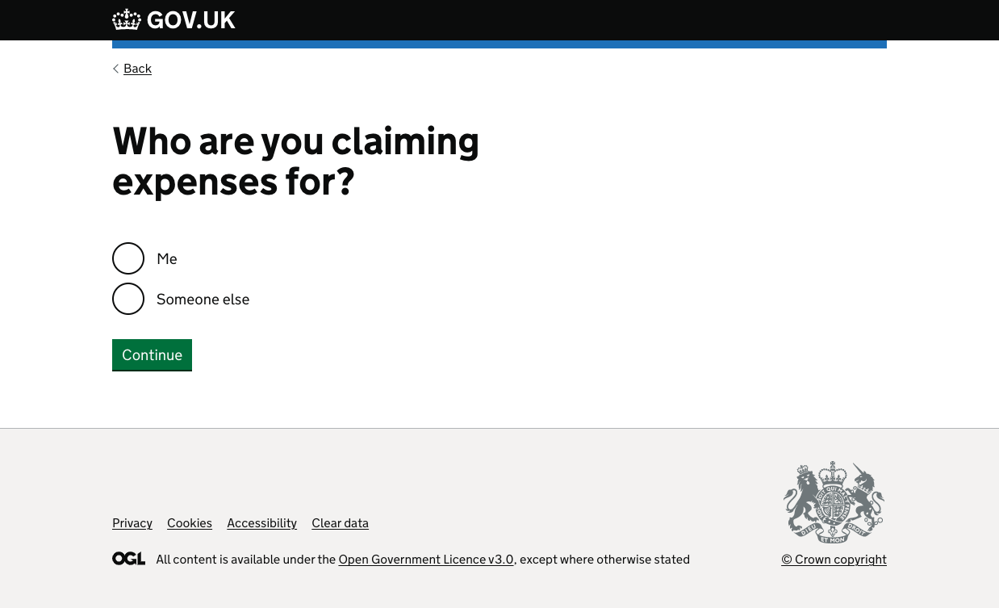{kind=link}
We weren’t really testing this in detail as the onboarding process had not been figured out.
User Research
N/A
5. Claiming food

Food and drink can be claimed by anyone.
User Research
This was often the first time users had come across the rates for food and drink. Users often expected to need receipts and be able to claim for the amounts they spent, this was a suprise and the actual rates (especially in London) we’re seen as too low
It wan’t clear that the amount of time is for away from home or work rather than just being in court.
6. Claiming food

This mirrors the way the current blue form asks this question, and is before the MVP restricted claims to one day or less.
User Research
This didn’t really work:
- users quite often put in hours rather than days
- they didn’t know what the next questions were, about 5-10 hours etc, and found that was confusing
they often thought they could only claim for the time there were in court
- a minority of users put an amount they wanted to claim in here rather than the number of days
7. Claiming food
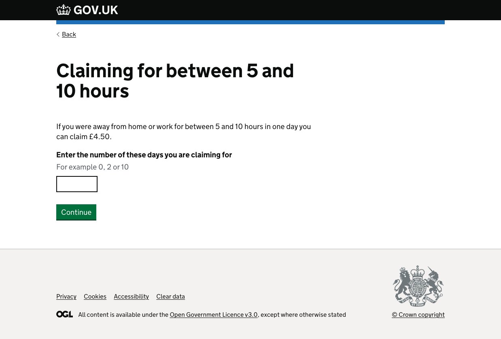{kind=link}
Same as 6. Claiming food
User Research
8. Claiming food
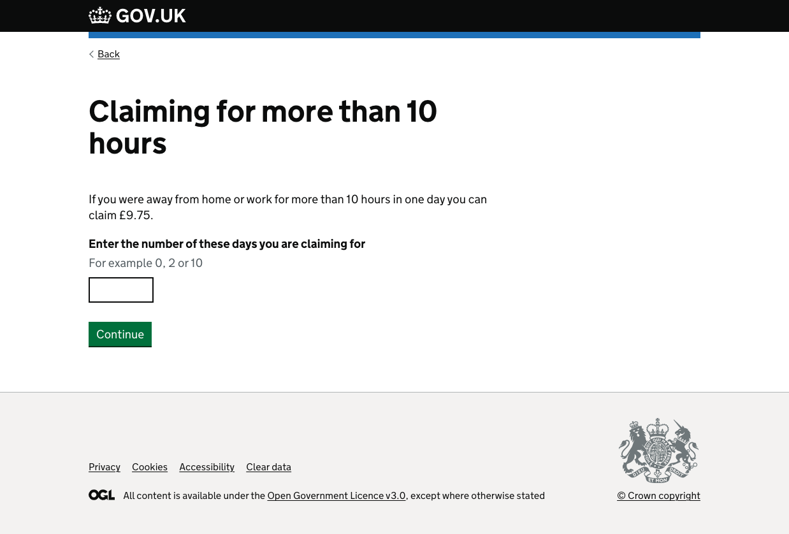{kind=link}
Same as 6. Claiming food
User Research
9. Train journey
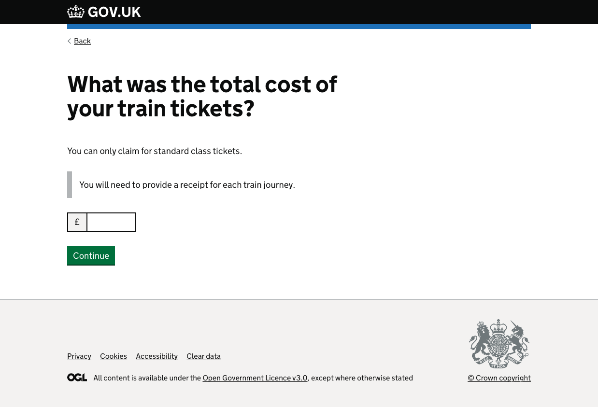{kind=link}
We tried a few different ways of asking this quesion - users could add up the total cost of their journeys or add them individually.
User Research
This generally worked ok, users preferred to add in a total than to add individual tickets or journeys.
In an earlier version users did not always see the content telling them about receipts, adding the emphasis made it clearer and more likely the user would read it.
10. Tube/subway
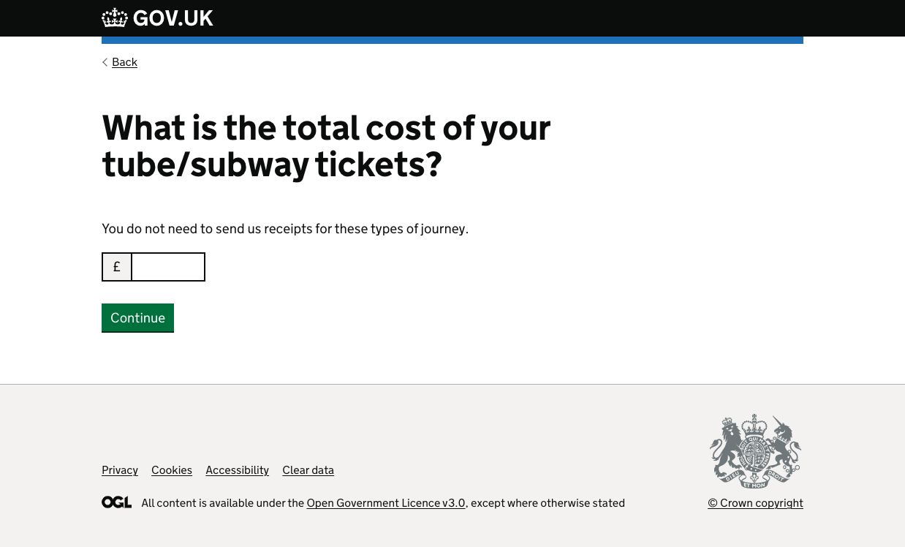{kind=link}
This transport option does not need a receipt, we wanted to check the language and see if users understood that they did not need to add receipts for this option.
User Research
Some users missed the content telling them that they did not need receipts.
11. Overnight stay
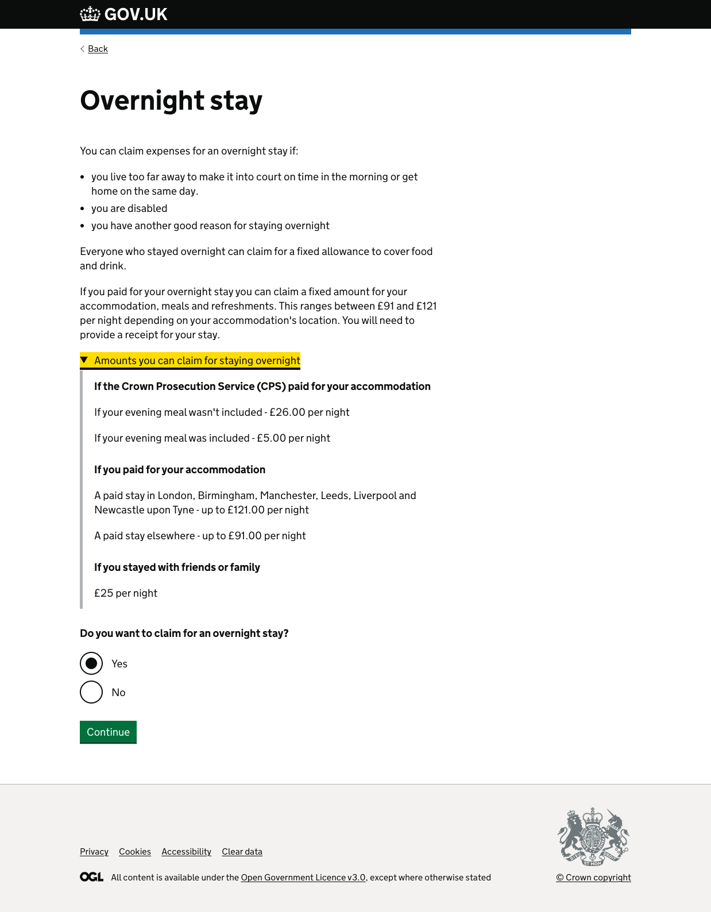{kind=link}
The policy on overnight stay has a lot of options that affect how much you can claim - whether you paid for yourself, stayed with friends, which city you were in etc. This is our first attempt to explain it to users.
User Research
Some of the reasons you could stay were a bit vague - ‘live too far away from home’
The detailed copy wasn’t entirely clear and needs to be simplifed further
Users didn’t know who the CPS was or who paid for their stay when it was paid for.
12. Did the court pay

This option is a part of a series of questions that are attempting to guide the user to how much they can claim.
User Research
Users didn’t get the court pay part of the content, they weren’t sure who paid for their overnight stay when it had been paid for.
13. Pay for an evening meal
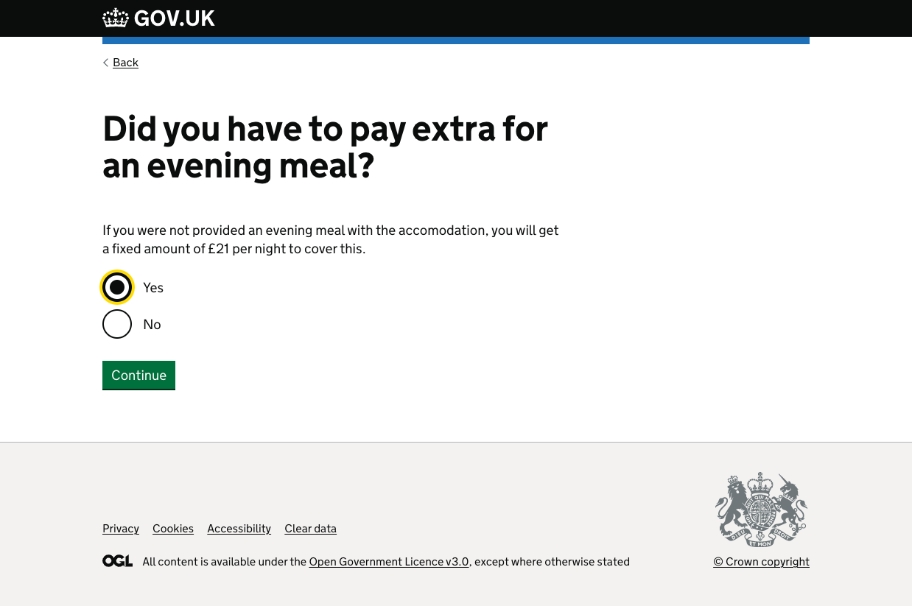{kind=link}
If the court payed for the users overnight stay, they may still have had to pay for an evening meal themselves. If so they can claim an extra £21 a night to cover this.
User Research
This was clear to users. Although we will clarify the policy to show that users get £26 a night rather than £21 and £5.
14. How many nights

This was before we changed the MVP to just be one day or less at court. The wording needed to be clear that it was the amount of time the user had been told they had to stay - some users try and book more time than is needed.
User Research
Users understood this
15. Did the court pay, no
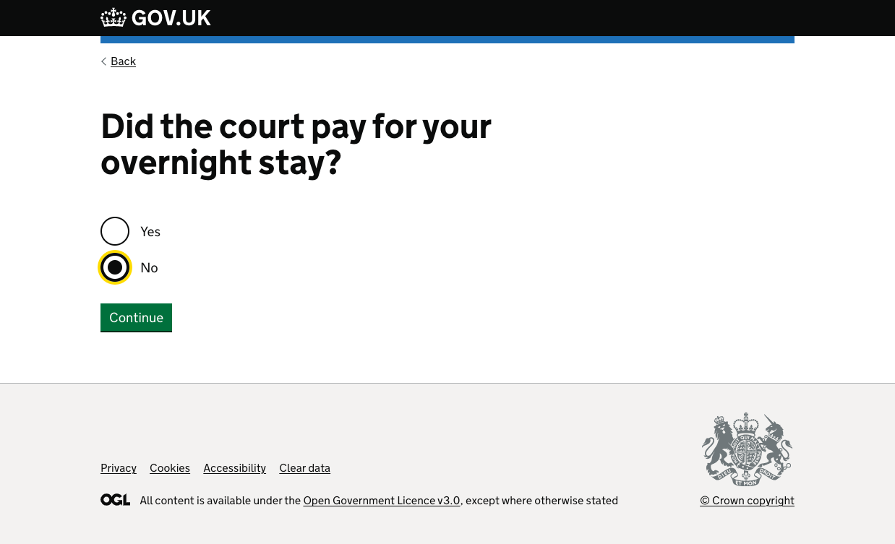{kind=link}
If users choose No to this option, they will have paid themselves or stayed with friends or family.
User Research
Again, users didn’t really understand ‘the court paying’ for the overnight stay.
16. Did you pay, Yes
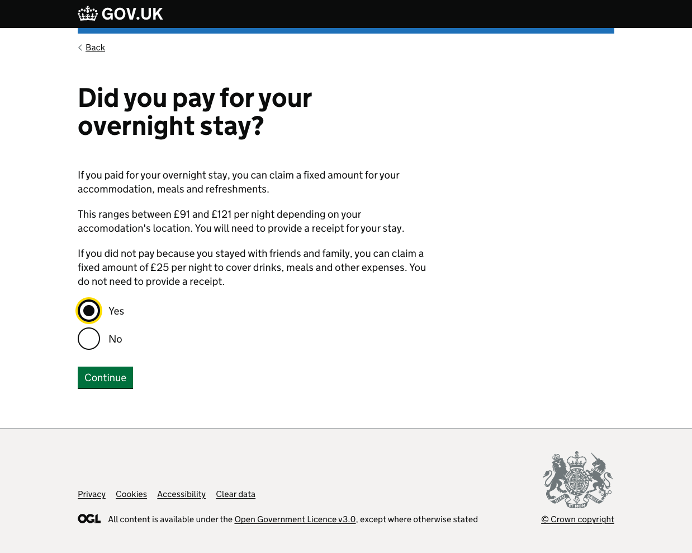{kind=link}
The user paid for their overnight stay themselves. The content was not entirely clear and we worked to improve it
User Research
Users understood what to do but the content was not entirely clear.
17. How many nights
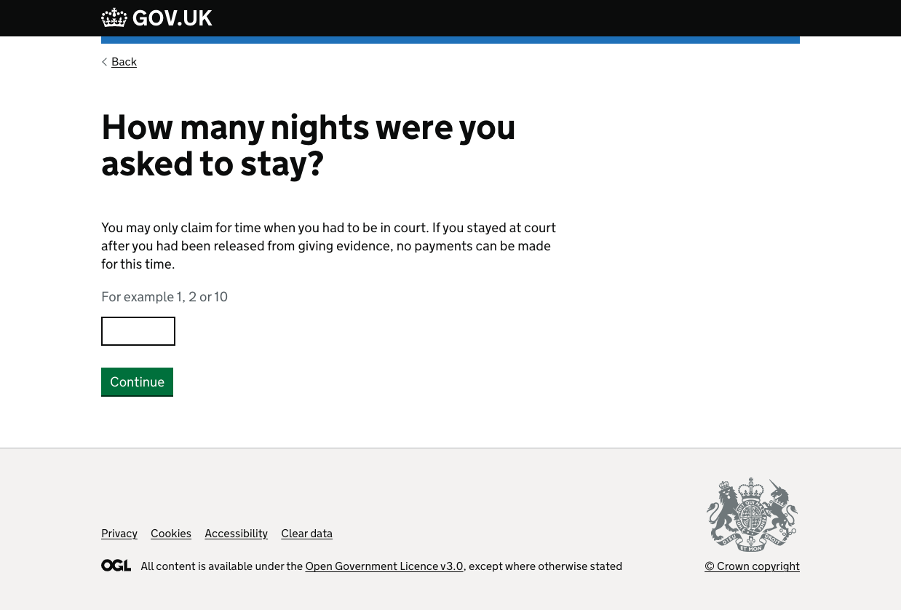{kind=link}
This is the same as point 14 but in a slightly differnt journey
18. Why did you stay
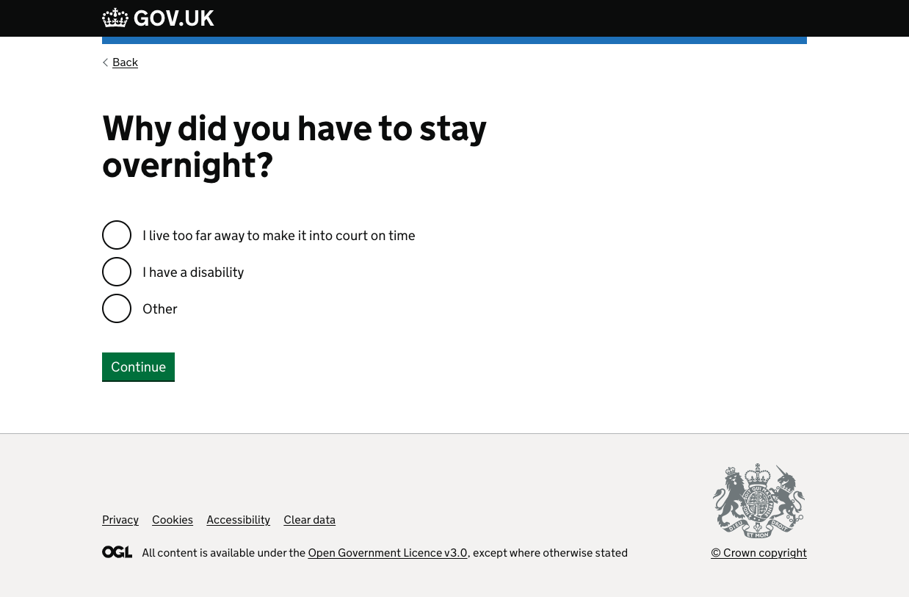{kind=link}
Users need to have a good reason to stay overnight, there are several reasons why this might be. The main two are pulled out.
User Research
The reasons, especially the first one are not clear enough - e.g. how far is too far away.
19. Home postcode

We use the home postcode to determine if the user lived too far away to get public transport etc. This will be removed in the MVP as we collect postcode at the start
User Research
Users understood this and why they were being asked
20. Where was your accomodation

We pay different rates to users depending on where in the country they had to stay.
User Research
Users understood the principle but it was not clear on what the definition of these areas are - what is London, within M25, london only postcodes etc etc. There was also a discussion about other expensive cities e.g. brighton and why these were not included.
21. Paid work
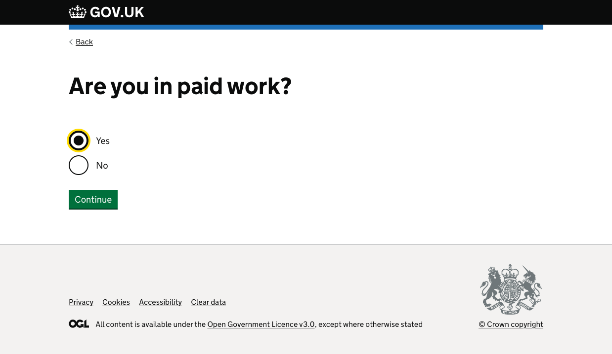{kind=link}
Users can claim for time off from an employed or self employed position
User Research
This was clear
22. Employed or self employed

The claim amounts and process is different for employed and self employed people.
User Research
Users understood this but we did find out later that directors of Ltd companies would sometimes put themselves down as self employed, which is incorrect.
23. Unpaid day off

We will only pay for an unpaid day off work. Paid holiday does not count so we needed to call this out in a screen.
User Research
Users didn’t seem to know that only unpaid days off would be paid for, but they understood this screen.
The notice about providing employers details or payslip needs to be clearer, why employers details, which payslip.
24. Away for less than 4 hours
{kind=link}
If users spent less than 4 hours away from work they will get upto £33.50 and £67 for a full day. This was to see how many days they had been away for less than 4 hours.
User Research
This and the next screen doesn’t really work. Users would put hours into the box, didn’t understand that they should put the amount of time away from work rather than the time in court and they didn’t know about the next page which made it confusing.
25. Away for more than 4 hours
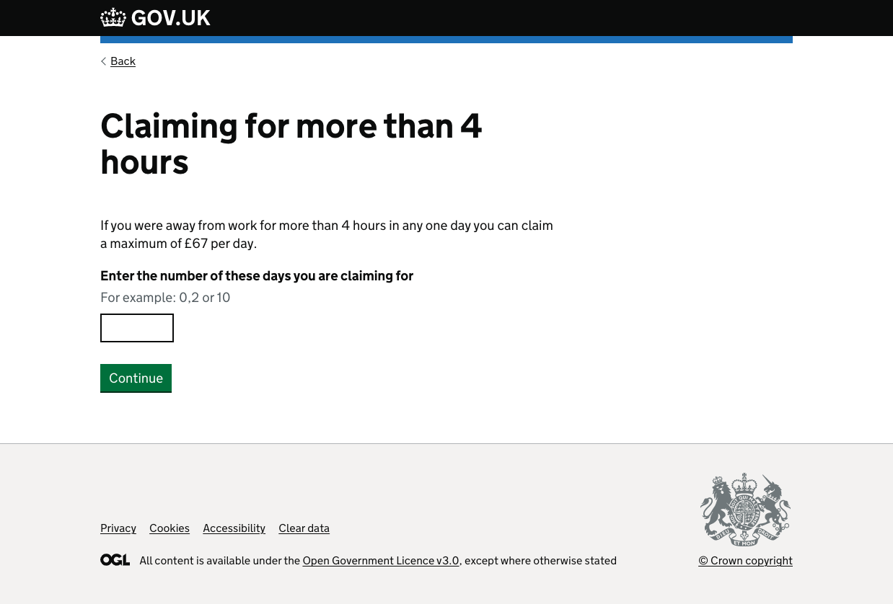{kind=link}
Same as above
26. Is your take home pay more than £67?
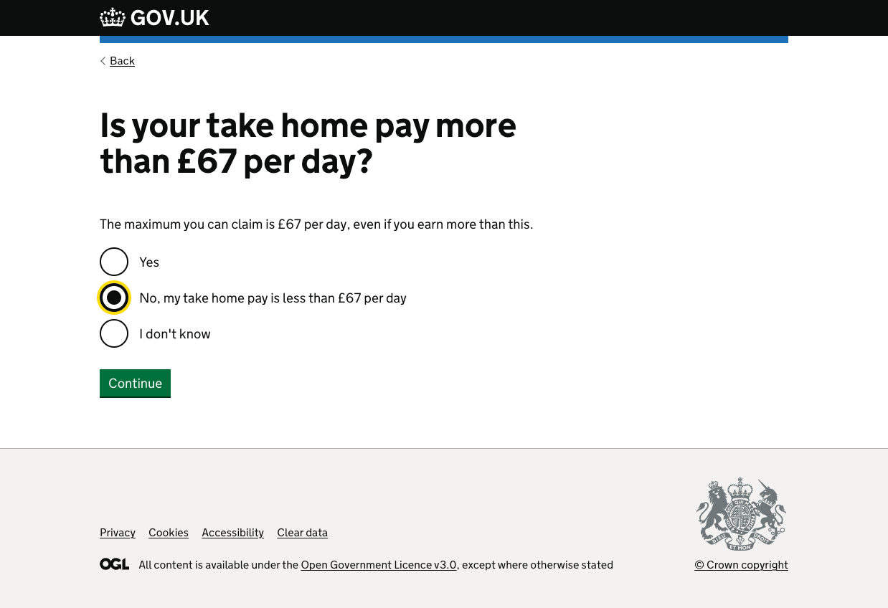{kind=link}
The policy was to pay users a maximum of £67 a day, which is only just above the adult minimum wage per person. If they earned less, then we would need to know how much they earned in order to pay them that amount. Our hypothesis was that users would find this difficult to know or workout.
The current form asks employers to fill out the amount that a user would have lost on the day they were off, we didn’t want to use this method in the digital form for several reasons - we’d heard from users that a significant percentage would not want to tell their employer they were going to court, we were not convinced that the calculations would be accurate just because employers were doing it and we didn’t want to add a process that would stop or delay the process because of a reliance on a 3rd party.
User Research
Some users knew that they earned over £67 a day, but a significant amount of users didn’t know how much they earned per day which would lead them down a route of being asked to calculate it.
27. Daily take home page
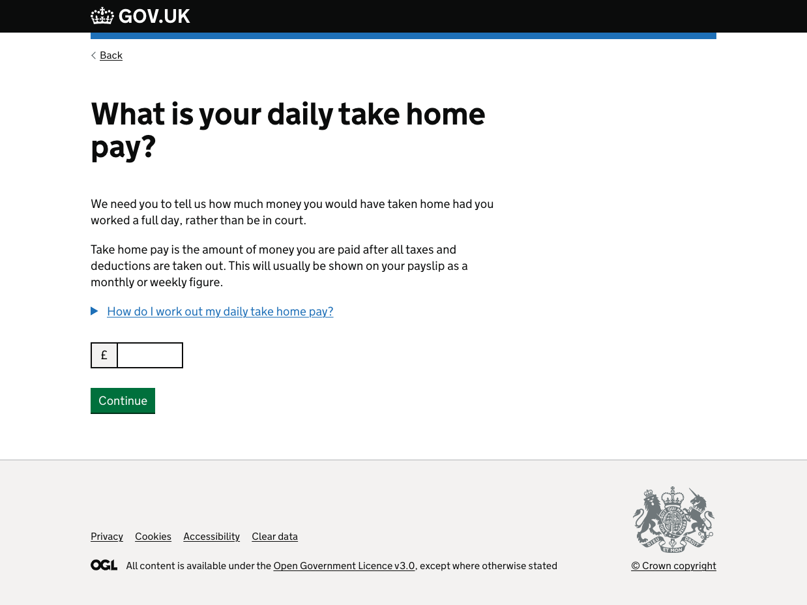{kind=link}
We didn’t think that asking users to work out their daily pay before deductions is a viable option. Calculating post tax income is difficult and has many variables that can change it. Users who are not numerate or have dyspraxia would find this difficult or impossible. However we put it in to test our assumption that it would cause problems
User Research
Users would find it difficult to work this out quickly and accurately. We also had a dyspraxic user who told us it would be difficult for her to use this section if she had to work out earnings.
28. Proof of employment

We want to check that the person claing for an unpaid day off work is actually employed. We are not checking how much they earn. We have two options. For users who are happy for their employer to possibly know that they were in court we ask them to give their employer details so that we can check they are employed. If not, they can upload a payslip to show they were in employment at the time.
User Research
Users seemed to understand this and why it was being asked.
29. Employers details
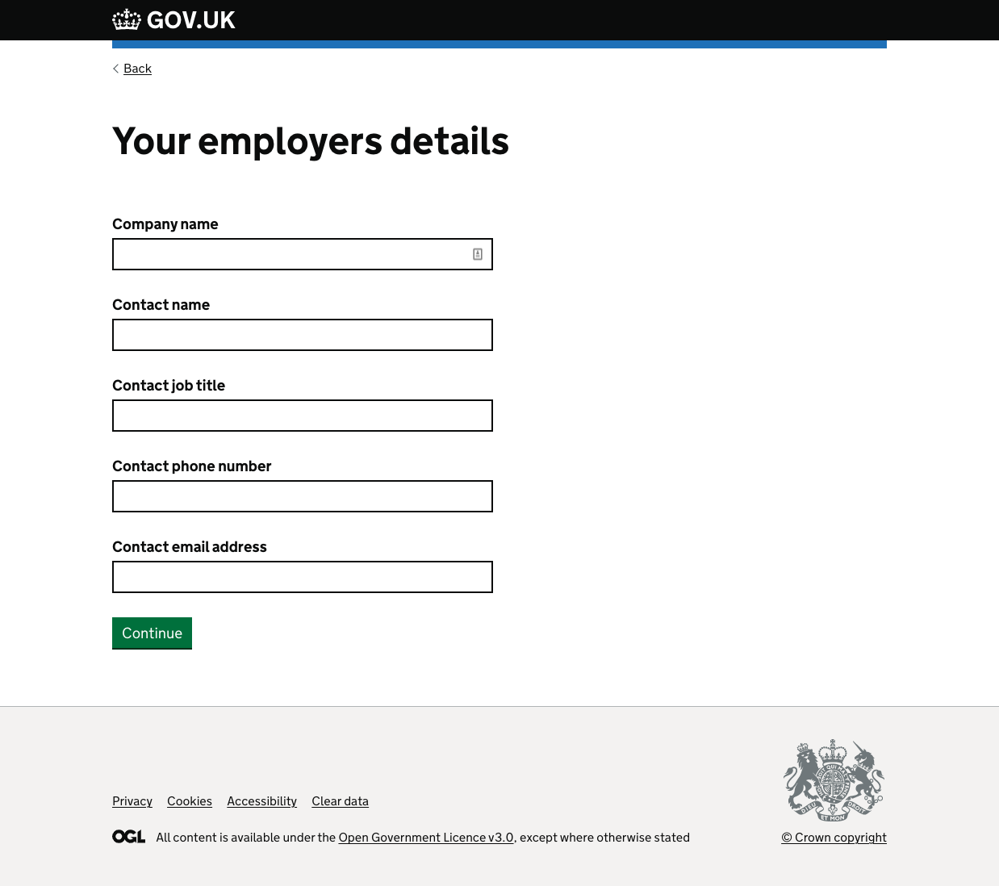{kind=link}
We are asking for information that we could use to check with an employer that the user was employed at the time they were claiming an unpaid day off work. If the user has multiple jobs we only need one employer.
User Research
Users seemed to understand this, but felt we should be clearer that this info might be used to contact the employer and check they were employed.
30. Childcare

Users can claim for childcare if they needed to pay for it whilst they were in court - but only if they did not claim for unpaid days off work.
User Research
Users seemed to understand that they could claim for childcare when they reached this page but were often surprised that they could claim for this. The content needs work to make it simpler and clearer.
31. Pet sitting
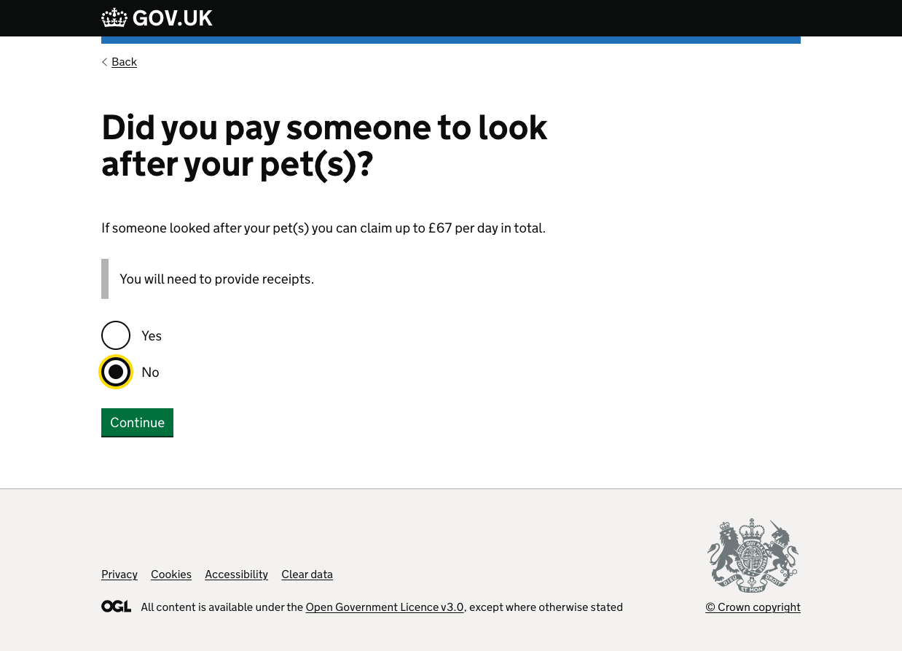{kind=link}
Users can claim for pet sitting if they had to get someone to look after their pets while they were in court. This is not pulled out as a specific category in the current blue form but has the highest volume of claims in the ‘other expenses’ section.
User Research
Users generally were very surprised by this, some thought it made sense but we frequently heard people saying that it was open to fraud and that they thought some people would try it on. We also heard surprise that the amounts were the same as childcare and an unpaid day off for a person, as well as there being a section for pet care but not adult care.
32. Other expenses
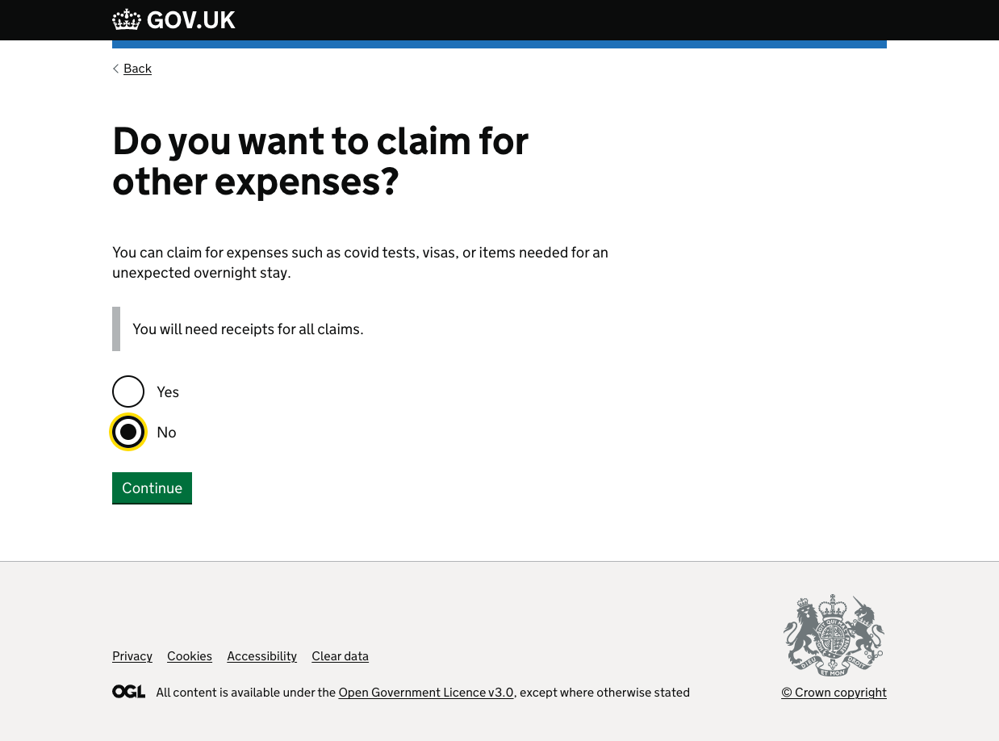{kind=link}
This is a catch all for expenses that tend to have fewer claims or relate to unique circumstances. We have added a few examples to help users who need to claim for other expenses.
User Research
Users generally understood this section.
33. Upload expenses
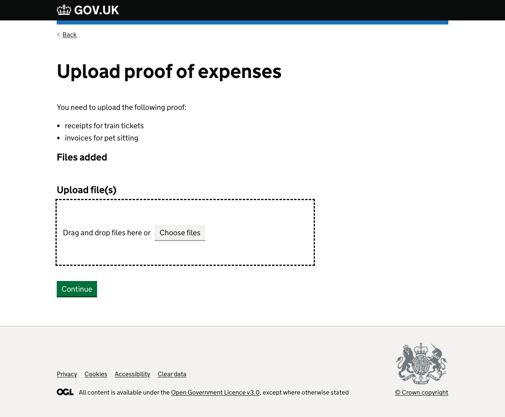{kind=link}
Users preferred the upload to be at the end of the journey and generally understood what this section was and how it worked.
User Research
Most users understood this but some commented that their elderly relatives may have trouble uploading receipts to the service. Most users on a desktop said they would take a photo of a receipt on their phone, email it to themselves and then upload it. Mobile users would take a photo of the receipt and upload it from the phone/tablet.
34. Choose how to be paid
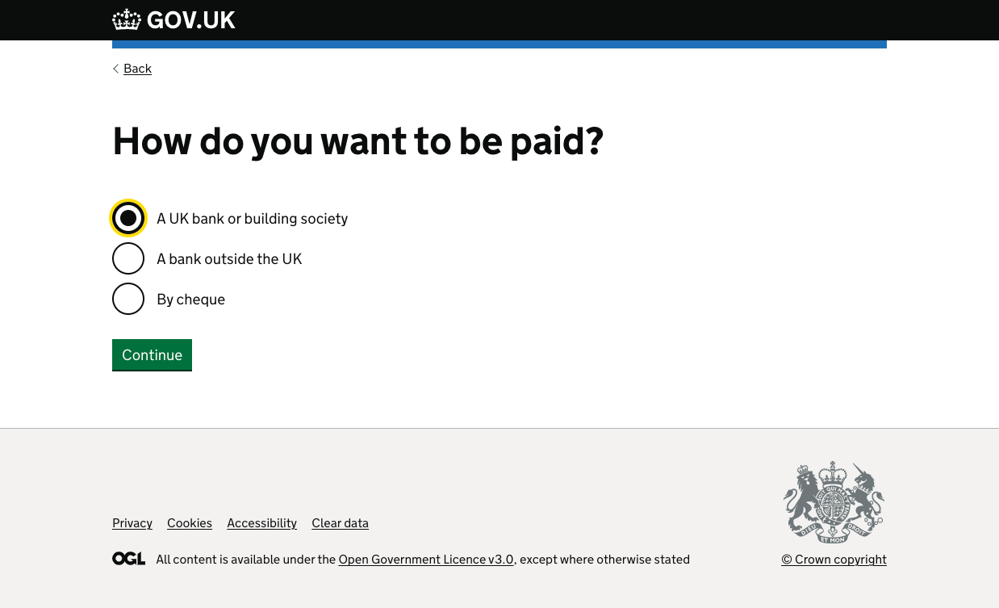{kind=link}
Choice of how to be paid
User Research
Users understood this and didn’t ask for any more options.
35. Bank details
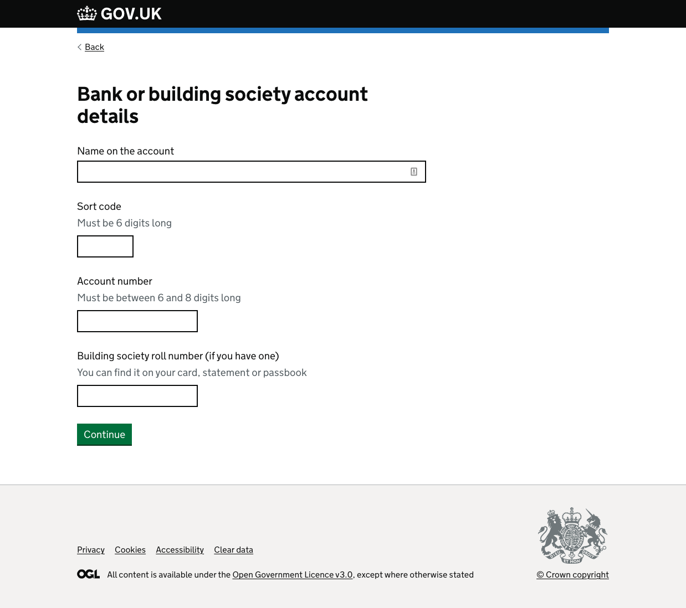{kind=link}
Standard GDS pattern to collect bank/building society details
User Research
Users understood this, we had a comment that the page title should be UK bank or building society… to match the question on the previous page.
36. Check your details
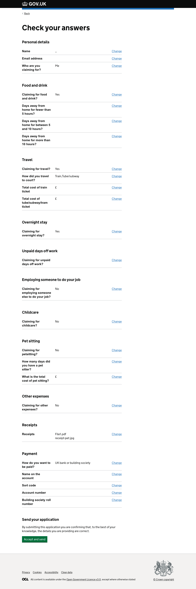{kind=link}
This is a fairly standard GDS check you answers page showing everything the user has entered.
Users really liked this, they wanted a way to double check their answers and go back and change them if need be. Suprisingly few unprompted users asked for a summary or total of the amounts to be claimed. When we prompted them by asking if it was something they needed the vast majority said it was.
37. Finished

This is a fairly standard GDS style finish page.
User Research
Users wanted a phone number and email address to contact in case the’re claim was not paid in time or if they had a question. When we discussed what should be in the email several users wanted to see the full check your answers page and a summary of the amounts claimed so if there was a question they had something to refer back to